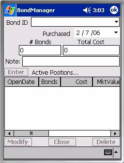
There are three dialogs in BondManager that deal with positions, the Positions Dialog, the Portfolio Navigator, and the Positions Transcripts dialog. The Positions Dialog offers the opportunity to view or create the positions linked to a specific stock or option issue.The Portfolio Navigator provides a top-down view of your bond portfolio, optionally expanding or collapsing branches in the hierarchy down to individual positions at the leaf level.
The Positions Transcripts dialog provides a text transcript equivalent to the leaf level in the Portfolio Navigator. The intent is to export these journal entries for review, tax records, and other documentary purposes.
The Positions Dialog is where all positions in your portfolio are created. BondManager tries to anticipate which bond you want to edit positions for based on the last issue you defined, analyzed, or created/edited positions for.
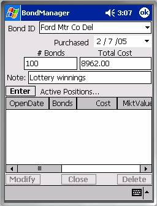
In the screen shot at right, we’ve selected ‘Ford Mtr CoNote that it’s not necessary to select a bond identifier from those already defined in the database. If you enter a new identifier, a placeholder bond definition will be created for you, though BondManager will not make any assumptions about the issue’s current market price, coupon rate, maturity date, etc. The market price in a placeholder definition is set to 0.00 to serve as a reminder that its value has never been properly defined. With so much information missing, you’ll find that Income and Yield columns (discussed below) contain meaningless placeholder values as well.
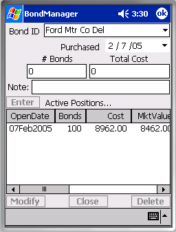
Purchase DateThe current date is used as the default value for the Purchased date. Future dates are disabled, so you can’t accidentally create pro forma positions.
The number of bonds in a position is stored as a double precision floating point number. While fractions of an bond don’t find much practical application, reinvestment plans often produce fractional shares of stock, so we’ve allowed for fractional bonds here to accommodate such situations. For short sales, you’d specify the number of units as a negative number.
Total Cost is also stored as a double precision floating
point value. The presumption is that it
represents the cost of the position including any transaction fees. As an example, if you defined ‘Ford Mtr Co
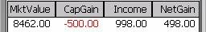
Note that the Total Cost associated with a short sale should be negative, thus representing an inflow of capital after expenses. Fees would reduce the magnitude of a short sale’s (negative) proceeds.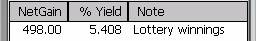
The Note field is provided to document almost anything associated with the position – typically, the position’s source of the funds. We’ll adopt the source of funds convention and call the sourc e ‘Lottery winnings’.Once a symbol has been entered and there are values for the number of shares and the total cost, the Enter button will be enabled.[1] Tapping the Enter button inserts a position representing the fields above into the database.
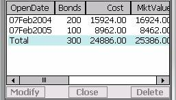
Any position that appears in the Active Positions control has persistent status. This dialog is the one place where you can modify or remove positions from the database. All stored positions for the currently selected bond identifier are displayed in the Active Positions list.If, in the year before we won the lottery, we sold our classic Vette and bought 200 bonds of the very same ‘Ford Mtr Co Del’ bond issue. we’d see two positions in the database.
Note that the most recently created position appears first in the list, not last. This is done so you will have visual confirmation even when the list contents exceed the size of the control.
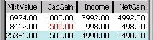
A Total row, highlighted in powder blue, has been added to depict the sums for each of the columns. The one exception is the % Yield column which displays the cost weighted average yield of the contributing positions (which depict annualized yields in this column). This entry gives you immediate feedback on how well cost averaging is working for you. The total row is only visible when more than one position exists for the issue you’ve selected.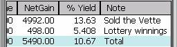
Column headings are generally self explanatory, so we’ll focus on a few things that may not be as readily apparent. The Net Gain column displays the sum of the Capital Gain and Income columns. The Note column displays the Note you made to yourself before Entering the position in the list.Clearly, you can’t see the contents of all columns without scrolling the Positions List horizontally, but you can disable the display of any of the columns in the Positions List Options dialog, thus reducing the need to scroll horizontally. The list control also supports column resizing, reordering, and sorting (toggles between ascending and descending) by tapping on the column header. If a total row is present, it is not included in the sort.
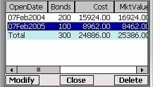
Managing the Contents of the Positions ListThe three buttons below the Positions List allow you to manage the list of positions displayed above. If you select one of the positions in the list, you’ll see the row highlight and the three buttons at the bottom of the screen become enabled. You may notice that you can’t select the total row – it’s not a real position, just a summary entry in the list control.
Here’s what happens when you select one of the three buttons at the bottom of the dialog.
The Delete button is the simplest of the three. Selecting it causes the message box below right to post over the dialog. [2] If you click ‘Yes’, it the position will disappear from the database forever. The Delete button is the only one of the three bottom buttons that supports multiple selections.
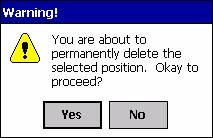
ModifyThe Modify button is very much like the Delete button, in that it warns you that you are about to delete the selected position, and once you select ‘Yes’, the position will be permanently deleted from the database, just as it promised.[3] The difference is that Modify overwrites, without asking permission, all of the fields in the dialog with values taken from the position you are ‘modifying’. Clearly, you shouldn’t use the Modify button if you have typed information into the fields above the Enter button that you care about.
After you complete your modifications, you must re-Enter the position in the database. Until it appears in the Active Positions list below the Enter button, it’s not saved in the database – that’s why the warning message says “you are about to permanently delete the selected position” when you just selected Modify. It’s really been permanently deleted until you re-Enter it.
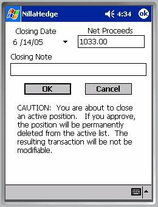
CloseThe Close button also has irreversible consequences, but it does not have an associated preference in the Confirmation Options Dialog because it needs to capture additional information along with your approval to proceed. The Close Position Dialog completely overlays the Positions Dialog and collects three things from you which enable converting it into a closed position. The date the position was closed, the net proceeds from the sale, and a closing note. The closing date can be no later than the current date. Upon selecting the ‘OK’ button, a ‘closed position’ is created in the database with all of the information previously associated with the active (open) position. The active (open) position is then deleted.
There is no mechanism for modifying a closed position – it can’t be deleted, modified, or converted back into an active (open) position, but you can get transcripts of all closed positions according to the year in which they were closed (refer to the Positions Transcripts Dialog on the Tools menu).
[1] The initial results of clicking the Enter button are shown above right, with scroll-right addenda below it.
[2] You can bypass warning messages posted by the Delete button by disabling the preference ‘Positions Dialog – Delete position’ in the Confirmation Options Dialog.
[3] You can bypass warning messages posted by the Modify button by disabling the preference ‘Positions Dialog – Modify position’ in the Confirmation Options Dialog. .